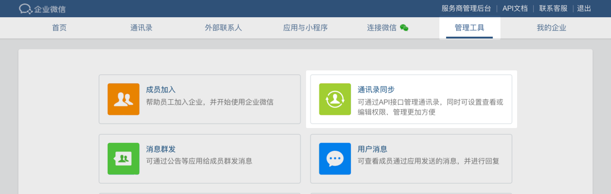
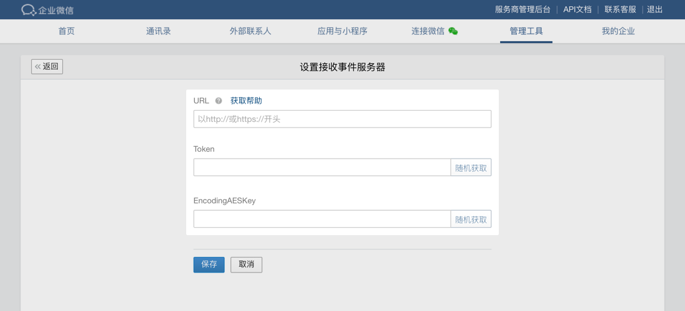

目录
在企业微信管理后台的“管理工具-通讯录同步-设置接收事件服务器”处，进入配置页面，要求填写通讯录同步助手的URL、Token、EncodingAESKey三个参数。为保证企业数据安全，URL需要配置本企业主体的域名链接。
参数配置要求，参考文档：回调配置

当点击“保存”提交以上信息时，企业微信会发送一条验证消息到填写的URL，以验证URL的有效性。
代开发应用会默认回调通讯录变更事件。事件回调到代开发应用回调URL上。
文档说明中出现的xml包仅是接收的消息包中的Encrypt参数解密后的内容说明